EARTHQUAKE MAP
This map shows recorded earthquakes across the globe. Select a pin to learn about its magnitude and see a visual simulation of how strongly it shook the ground.


Magnitude (Richter scale): __
Location: __
Date & Time: __
Depth: __
Distance from you: __